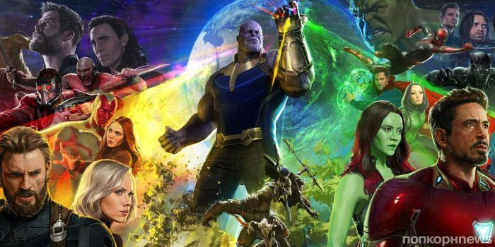
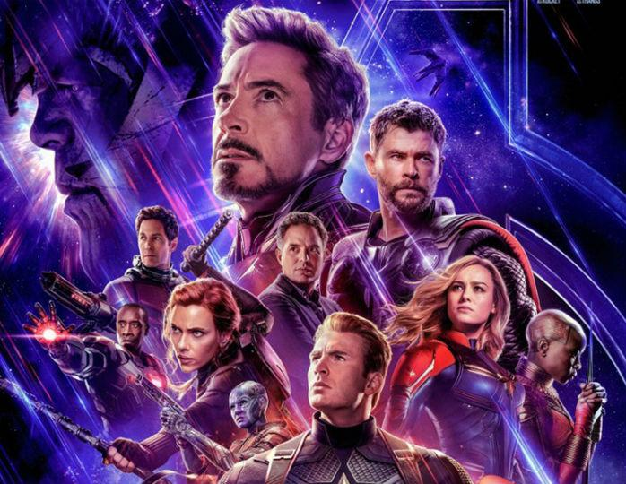

«Месники: Війна нескінченності» (англ. Avengers: Infinity War) - американський художній фільм 2018 року режисерів Ентоні і Джо Руссо, заснований на коміксах про пригоди команди супергероїв Marvel. Продовження фільмів «Месники» 2012 року і «Месники: Ера Альтрон» 2015 року, а також 19-а за рахунком картина в кінематографічної всесвіту Marvel.
Через чотири роки після подій, що були показані у фільмі «Вартові галактики 2» частина Месників та Вартові галактики об'єднуються щоб зупинити Таноса, який збирає камені вічності. За допомогою цих каменів та рукавиці Танос зможе змінювати реальність за своїм бажанням.
Поки Месники і їх союзники продовжують захищати мир від різних небезпек, з якими не зміг би впоратися один супергерой, нова загроза виникає з космосу: Танос. Міжгалактичний тиран має на меті зібрати всі шість Каменів Нескінченності - артефакти неймовірної сили, за допомогою яких можна змінювати реальність за своїм бажанням. Все, з чим Месники стикалися раніше, вело до цього моменту - доля Землі ніколи ще не була такою невизначеною.
 